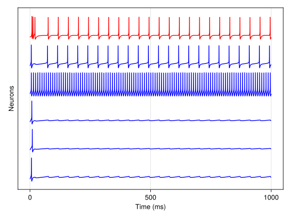
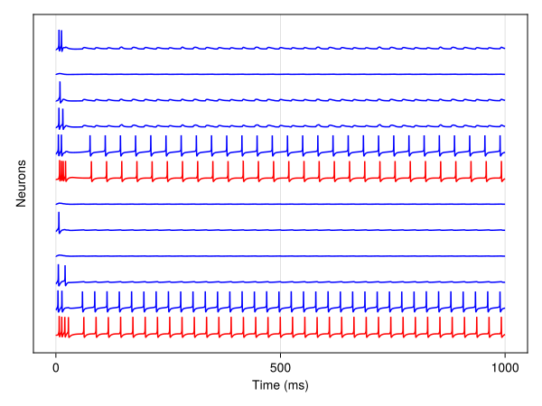
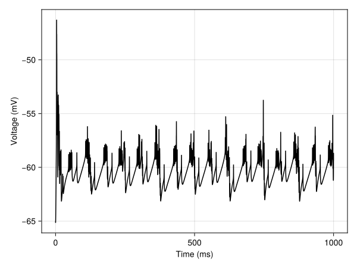
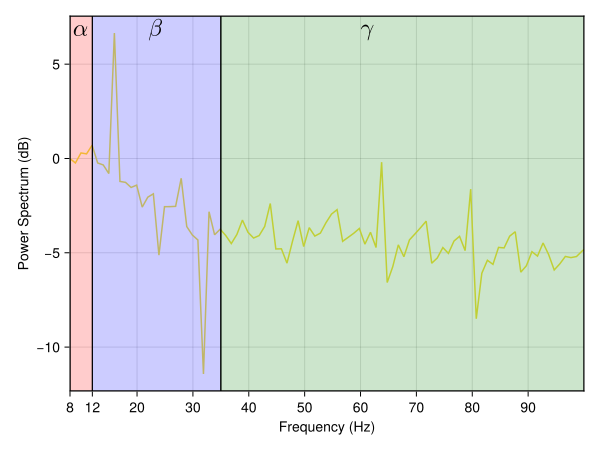
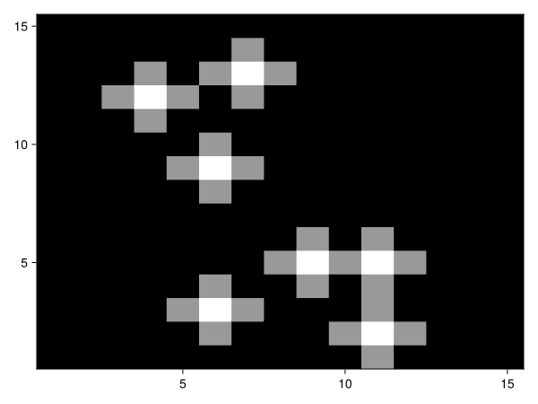

Biomimetic Model of Corticostriatal Micro-assemblies
Jupyter Notebook: Please work on
CS_circuit.ipynb.
Introduction
In this session we will build a neural assembly that is part of a larger model that performs category learning of images [1]. We will follow a bottom-up approach moving across three levels; from Neuron Blox objects to a CompositeBlox containing Neuron objects to a CompositeBlox containing the first CompositeBlox.
In a later session we will extend this model and add synaptic plasticity to it to perform category learning, as a simplified version of [1].
Lateral Inhibition Circuit
using Neuroblox
using OrdinaryDiffEqVerner
using Random
using CairoMakieFirst we will manually create a lateral inhibition circuit (Figure 1, the "winner-takes-all" circuit) to better understand its components. This circuit is inspired by the structure of the superficial cortical layer.  Figure 1: Lateral inhibition in the winner-takes-all circuit.
Figure 1: Lateral inhibition in the winner-takes-all circuit.
@graph g begin
@nodes begin
inh = HHNeuronInhib(G_syn = 4.0) ##feedback inhibitory interneuron neuron
##creating an array of excitatory pyramidal neurons
exci1 = HHNeuronExci(I_bg = 5*rand())
exci2 = HHNeuronExci(I_bg = 5*rand())
exci3 = HHNeuronExci(I_bg = 5*rand())
exci4 = HHNeuronExci(I_bg = 5*rand())
exci5 = HHNeuronExci(I_bg = 5*rand())
end
@connections begin
for exci_neuron ∈ [exci1, exci2, exci3, exci5]
inh => exci_neuron, (weight = 1)
exci_neuron => inh, (weight = 1)
end
end
endGraphSystem(...6 nodes and 8 connections...)As we can see, the lateral inhibition circuit is made up of 5 excitatory neurons with each one having a reciprocal connection to the same inhibitory interneuron.
prob = ODEProblem(g, [], (0.0, 1000), [])
sol = solve(prob, Vern7())
fig = stackplot([exci1, exci2, exci3, exci4, exci5, inh], sol)
stackplot stacks the voltage timeseries of each input neuron on top of each other. Excitatory neurons appear in blue and inhibitory neurons in red by default. The y-axis scale is meaningless due to timeseries offsets, yet the plot offers a useful look into spiking patterns in a population.
Exercise: Try varying the size of the circuit by changing the number of excitatory neurons, while keeping the same structure (all of them connect to the inhibitory neuron and vice versa).
The circuit we just built is implemented as a single Blox in Neuroblox. The WinnerTakeAllBlox is a subtype of CompositeBlox. Now we will connect two of these together using the Neuroblox strutures.
N_exci = 5 ## number of excitatory neurons in each WTA circuit
# For a single-valued input `I_bg`, each neuron in the WTA Blox will receive a uniformly distributed random background current from 0 to `I_bg`.
@graph g begin
@nodes begin
wta1 = WinnerTakeAll(I_bg=5, N_exci=N_exci)
wta2 = WinnerTakeAll(I_bg=4, N_exci=N_exci)
end
@connections begin
wta1 => wta2, DensityRule(weight=1, density=0.5)
end
endGraphSystem(...2 nodes and 1 connections...)The density keyword argument sets the connection probability from each excitatory neuron of wta1 to each excitatory neuron of wta2. Whether a connection is actually made or not depends on a Bernoulli trial with probability of success equal to density.
prob = ODEProblem(g, [], (0.0, 1000), [])
sol = solve(prob, Vern7())
neuron_set = get_neurons([wta1, wta2]) ## extract neurons from a composite blocks
fig = stackplot(neuron_set, sol)
Cortical Superficial Layer
Now we are ready to create a single cortical superficial layer block by connecting multiple WTA circuits
This model is SCORT in [1] and looks like the one in Figure 2.  Figure 2: Cortical circuit with multiple WTA microcircuits.
Figure 2: Cortical circuit with multiple WTA microcircuits.
N_wta = 10 ## number of WTA circuits
# parameters
N_exci = 5 ## number of pyramidal neurons in each lateral inhibition (WTA) circuit
G_syn_exci = 3.0 ## maximal synaptic conductance in glutamatergic (excitatory) synapses
G_syn_inhib = 4.0 ## maximal synaptic conductance in GABAergic (inhibitory) synapses from feedback interneurons
G_syn_ff_inhib = 3.5 ## maximal synaptic conductance in GABAergic (inhibitory) synapses from feedforward interneurons
I_bg = 5.0 ## background input current
density = 0.01 ## connection density between WTA circuits
@graph g begin
@nodes begin
# create a vector of `WinnerTakesAllBlox` using list comprehension
wtas = [WinnerTakeAll(; N_exci, G_syn_exci, G_syn_inhib, I_bg) for i in 1:N_wta]
n_ff_inh = HHNeuronInhib(; G_syn=G_syn_ff_inhib)
end
@connections begin
for i in 1:N_wta
for j in 1:N_wta
if j != i
wtas[i] => wtas[j], DensityRule(weight=1, density=density)
end
end
n_ff_inh => wtas[i], (weight=1)
end
end
endGraphSystem(...11 nodes and 100 connections...)WTA circuits connect to each other with given connection density and the feedforward interneuron connects to each WTA circuit. The feedforward interneuron n_ff_inh of a CorticalBlox connects to all excitatory (pyramidal) cells of the WTA circuits within the CorticalBlox and receives input from excitatory neurons of other CorticalBlox that connect to the current CorticalBlox. This interneuron is largely responsible for controlling the spiking rhythm of the ensemble of WTAs.
prob = ODEProblem(g, [], (0.0, 1000))
sol = solve(prob, Vern7())
wta_neurons = get_neurons(wtas) ## extract neurons from WTA circuits
neurons = vcat(wta_neurons, n_ff_inh)
fig = stackplot(neurons, sol)
Exercise: Try different connection densities and weights and see how it affects the population activity.
Cortical Superficial Layer with Ascending System
The next step is to expand the cortical model we just created by adding a Blox representing an ascending system (ASC1 in [1]) to it. We define the ascending system using a Next Generation Neural Mass model as described in [2]. The neural mass parameters are fixed to generate a 16 Hz modulating frequency in the cortical neurons.
@graph g begin
@nodes begin
ASC1 = NextGenerationEI(; Cₑ=2*26, Cᵢ=26, v_synₑₑ=10.0, v_synₑᵢ=-10.0, v_synᵢₑ=10.0, v_synᵢᵢ=-10.0, alpha_invₑₑ=10.0/26, alpha_invₑᵢ=0.8/26, alpha_invᵢₑ=10.0/26, alpha_invᵢᵢ=0.8/26, kₑᵢ=0.6*26, kᵢₑ=0.6*26)
CB = Cortical(
N_wta=10, ## number of WinnerTakeAll circuits
N_exci=5, ## number of pyramidal neurons in each WinnerTakeAll circuit
density=0.01,
weight=1,
I_bg_ar=7
)
end
@connections begin
ASC1 => CB, (weight=44)
end
endGraphSystem(...2 nodes and 1 connections...)Similar to WinnerTakeAll, the cortical model we created above by connecting multiple WTAs together is implemented as a single Blox in Neuroblox. This is the Cortical and it models a superficial layer cortical microcircuit. So Cortical is a hierarchical Blox which holds a feedforward interneuron and multiple WinnerTakeAllBlox which in turn hold multiple excitatory neurons and one feedback interneuron each.
# solve the system for time 0 to 1000 ms
prob = ODEProblem(g, [], (0.0, 1000))
sol = solve(prob, Vern7());
neuron_set = get_neurons(CB) ## extract neurons from a composite block like CorticalBlox
n_neurons = 50 ## set number of neurons to display in the stackplot
fig = stackplot(neuron_set[1:n_neurons], sol)
We can also generate plots of averaged activity in any composite Blox like CorticalBlox and WinnerTakeAllBlox. For instance the meanfield of all cortical block neurons (mean membrane voltage)
fig = meanfield(CB, sol)
and the powerspectrum of the meanfield (average over membrane potentials)
fig = powerspectrumplot(CB, sol; sampling_rate=0.01)
Notice the peak at 16 Hz, representing beta oscillations.
Exercise: Try changing parameters of
ASC1to generate different cortical rhythms.
Visual Processing in the Extended Cortical Model
Finally we will simulate visual processing in our model by adding a CorticalBlox representing visual area cortex (VAC) and an ImageStimulus connected to it. This extended model is shown in Figure 3.  Figure 3: Extended circuit with Cortex, Brainstem and Image Stimulus components.
Figure 3: Extended circuit with Cortex, Brainstem and Image Stimulus components.
using CSV ## to read data from CSV files
using Downloads ## to download image stimuli files
using StructArrays
image_set = CSV.read(Downloads.download("raw.githubusercontent.com/Neuroblox/NeurobloxDocsHost/refs/heads/main/data/image_example.csv"), StructArray) ## reading data into CSV file format
image_sample = 2 ## set which image to input (from 1 to 1000)
# access the desired image sample, exclude the last row that is a category label
pixels = collect(image_set[image_sample])[1:end-1]
# reshape into 15 X 15 square image matrix
pixels = reshape(pixels, 15, 15)
# plot the image that the visual cortex 'sees'
fig = heatmap(pixels, colormap = :gray1)
Above we can see an example image stimulus. Each pixel of the image stimulus is a variable (stim₊u_i) that connects to a neuron of the visual cortex VAC Blox. Using connection_rule(stim, VAC) we can better see how this connection is implemented.
@graph g begin
@nodes begin
stim = ImageStimulus(
image_set[[image_sample]],
t_stimulus = 1000, ## how long the stimulus is on (in msec)
t_pause = 0 ## how long the stimulus is off after `t_stimulus` (in msec)
)
VAC = Cortical(N_wta=10, N_exci=5, density=0.01, weight=1)
AC = Cortical(N_wta=10, N_exci=5, density=0.01, weight=1)
# ascending system blox, modulating frequency set to 16 Hz
ASC1 = NextGenerationEI(Cₑ=2*26,Cᵢ=1*26, Δₑ=0.5, Δᵢ=0.5, η_0ₑ=10.0, v_synₑₑ=10.0, v_synₑᵢ=-10.0, v_synᵢₑ=10.0, v_synᵢᵢ=-10.0, alpha_invₑₑ=10.0/26, alpha_invₑᵢ=0.8/26, alpha_invᵢₑ=10.0/26, alpha_invᵢᵢ=0.8/26, kₑᵢ=0.6*26, kᵢₑ=0.6*26)
end
@connections begin
stim => VAC, (weight=14)
ASC1 => VAC, (weight=44)
ASC1 => AC, (weight=44)
VAC => AC, HypergeometricRule(weight=3, density=0.08)
end
end
# define system and solve
prob = ODEProblem(g, [], (0.0, 1000))
sol = solve(prob, Vern7());Exercise: : Use the plotting functions from above to visualize the simulation results for any Blox of your choice. Try changing the image samples and notice the change in the spatial firing patterns in VAC and AC neurons.
Challenge Problems
- Try changing parameters of ASC1, which is modeled as Next Generation Neural Mass Model to generate different cortical rhythms. See how the peak shifts in the power spectrum when you connect AC1 to a cortical block CB. Currently it’s set for 16 hz oscillation. See if you can get it to oscillate at 5 Hz, 10 Hz and 20 Hz.
- In the circuit with ASC1, VAC, AC and stimuli, add another ascending input ‘ASC2’ such that ASC1 connects only to VAC and ASC2 connects only to AC. Now set the parameters of ASC2 to oscillate at different frequencies (5 Hz, 10 Hz etc.). Observe the power spectrum of the activity of AC, does it show two peaks?
- Try different values of tstimulus and tpause that are set during defining the stimulus (such that tstimulus + tpause = 1000 msec). See the effect in the activities of VAC and AC in their stack plots. You will notice that the activity in the cortical blocks stops after t=tstimulus. Now try making multiple cortical blocks similar to AC (AC1, AC2 say). Try connecting them in different topologies. One possibility is a chain i.e VAC -> AC1 -> AC2 … so on. Another possibility is of a loop i.e. VAC -> AC1 -> AC2 …. -> AC1. In this loop, the activity can sustain even in the absence of stimulus (during tpause) due to the feedback loop. Try and see if you can create a loop where activity persists even after t=t_stimulus.
References
- [1] Pathak, A., Brincat, S.L., Organtzidis, H. et al. Biomimetic model of corticostriatal micro-assemblies discovers a neural code. Nat Commun 2025. https://doi.org/10.1038/s41467-025-67076-x
- [2] Byrne Á, O'Dea RD, Forrester M, Ross J, Coombes S. Next-generation neural mass and field modeling. J Neurophysiol. 2020 Feb 1;123(2):726-742. doi: 10.1152/jn.00406.2019. Epub 2019 Nov 27. PMID: 31774370.
This page was generated using Literate.jl.